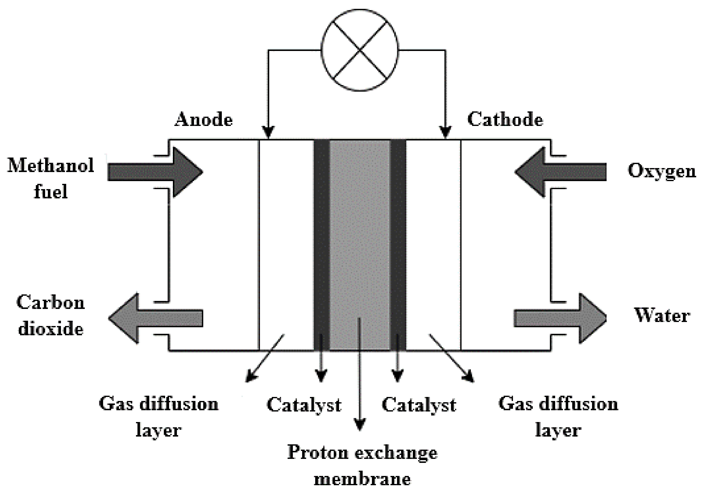

CBE 3300B:
Direct Methanol Fuel Cell (DMFC)
Methanol Dynamics & Co. LLP (Max, Jack, Karam)
Spring 2025
Chemical and Biomolecular Engineering
University of Pennsylvania
1 Introduction
This project explores the design and prototyping of a Direct Methanol Fuel Cell (DMFC) system using a 10-cell Flex-Stak from the Fuel Cell Store. The cell operates on a 3 % methanol solution (~1 M), and is designed to produce sufficient voltage and current to charge a 10,000 mAh battery pack within 24 hours.
Our prototype integrates fluid dynamics (via peristaltic pumping), real-time monitoring (via Arduino and sensors), and electrical circuitry for power conditioning. We aim to validate theoretical predictions of fuel consumption, current density (~50 – 100 mA/cm²), and overall efficiency (~20 – 40 %).
Key design constraints include minimizing methanol crossover, maximizing fuel cell power output, and designing dynamic circuitry for live readings and feedback.
Market Context
Fuel cell technology is poised for significant growth, with the global market expected to reach approximately $11 billion by 2029. Fuel cells are already used for:
- Stationary electricity production
- Vehicular powertrains
- Energy storage systems
Methanol fuel cells, in particular, represent a less mature segment with strong potential due to liquid fuel ease and high energy density.
SWOT Analysis
- Strength: Higher volumetric energy density than hydrogen; competitive with gasoline in conversion efficiency.
- Weakness: Toxicity and flammability concerns—methanol can cause health hazards if ingested and poses a fire risk.
- Opportunity: Operates on dilute liquid feed, simplifying storage and enabling safer operation.
- Threat: Competition from hydrogen fuel cells, which enjoy greater research focus and market adoption.
Competitor Analysis
- DMFCs are popular in portable power applications and defense due to modularity, high power density, low noise, and minimal thermal signature.
- Key players in portable power: Blue World Technologies ApS (Denmark).
- Key players in defense: SFC Energy (Germany).
2 Electrochemical Operation of a Direct Methanol Fuel Cell (DMFC)
The direct methanol fuel cell (DMFC) is an electrochemical device that converts the chemical energy of methanol into electrical energy through redox reactions. Unlike combustion, which releases energy primarily as heat, the DMFC harnesses this energy to drive electron flow, producing electricity in a controlled manner.
Anode Reaction: Methanol Oxidation
At the anode, methanol (CH3OH) and water (H2O) undergo oxidation in the presence of a catalyst, typically platinum (Pt) or platinum–ruthenium (Pt–Ru). This reaction results in the formation of carbon dioxide (CO2), protons (H+), and electrons (e−):
Proton Exchange and Electron Flow
Adjacent to the anode is a proton exchange membrane (PEM), often made of Nafion, which plays a crucial role in directing charge flow. This membrane allows the passage of protons (H+) from the anode to the cathode while preventing unwanted methanol crossover, a major source of efficiency loss in DMFCs. Meanwhile, the electrons generated at the anode travel through an external circuit, creating an electric current before reaching the cathode.
Cathode Reaction: Oxygen Reduction
At the cathode, oxygen gas (O2) is reduced in the presence of platinum or specialized catalysts such as RuSe, which help mitigate performance losses due to methanol crossover. The incoming oxygen reacts with protons from the membrane and electrons from the external circuit to form water:
Theoretical Maximum Voltage & Energy Efficiency
The ideal electromotive force (EMF) of a DMFC, derived from the Gibbs free energy change of the overall reaction:
is approximately 1.2 V per cell. However, due to losses from activation polarization, ohmic resistance, and mass transport limitations, practical operating voltages typically range between 0.3 V and 0.6 V per cell. The Nernst equation accounts for real operating conditions:
- E0 = 1.20 V
- R = 8.314 J/(mol·K)
- T = 298 K
- n = 6 (electrons)
- F = 96 485 C/mol
- Q = ([CO2][H2O]2)/([CH3OH][O2]3/2)
Summary of the DMFC Operation
- Anode: Methanol and water oxidize, producing protons, electrons, and CO2.
- Proton Exchange Membrane: Conducts protons to cathode, blocks methanol crossover.
- Electron Flow: Electrons traverse an external circuit to generate power.
- Cathode: Oxygen is reduced with protons/electrons to form water.
- Voltage Output: Theoretical 1.2 V, practical 0.3–0.6 V due to losses.
3 Prototyping Approach
Our prototyping approach follows a staged methodology aimed at optimizing the design and achieving the highest possible voltage for our direct methanol fuel cell (DMFC). The MVP goal is to develop a control device that precisely feeds methanol solution to the cell, monitors key parameters in real time, and is capable of charging an electronic device within a reasonable timeframe.
Minimum Viable Prototype (MVP)
- Control & Monitoring System: Peristaltic pump + Arduino controller for precise MeOH delivery; sensors (flow, temperature, voltage, current) for real-time performance tracking; designed to charge a 10,000 mAh battery pack with time close to theoretical estimates (See 5. Preliminary Calculations).
- Passive Fuel Delivery (Alternative): Relies on diffusion and natural convection—simple and low‐cost, but lacks precise dosing and data logging. We opted for active control to enable data‐driven optimization and reproducibility.
- Baseline Testing: Establish voltage‐current curves under controlled conditions to benchmark performance.
Design Choices
1. Active Control Implementation
- Introduce sensors (flow meters, temperature, concentration) for dynamic reactant control.
- Use Arduino‐based control and a micropump for precise MeOH delivery.
- Passive Strategy Comparison: Passive feed is often chosen for its simplicity and reliability, but it offers no fine control or live feedback—hence our choice of active control for precision and data acquisition.
2. Vapor vs. Liquid Feed Comparison
- Vapor Feed Merits: Reduced methanol crossover and higher kinetics at elevated temperature.
- Vapor Feed Cons: Requires vaporizer, accurate concentration monitoring, and complex safety controls; a “simple” version (bubbling N₂ through MeOH) is difficult to implement and monitor reliably.
- Liquid Feed Merits: Direct metering with peristaltic pump, straightforward flow‐rate measurement, and robust implementation.
- Liquid Feed Cons: Higher crossover risk, mitigated by membrane choice and optimized flow rates.
- Decision: Liquid feed selected for practicality, repeatability, and ease of monitoring.
3. Stack Orientation
- Literature shows vertical stacking can improve gas diffusion and CO₂ removal.
- Manufacturer recommends horizontal orientation; we follow this guideline for our MVP to ensure proper sealing and simplify assembly.
4. Final Voltage Benchmark and System Refinement
- Target 5 V via serial/parallel stacking of cells.
- Fine‐tune MeOH concentration, flow rates, and operating temperature to maximize power density and efficiency.
4 Project Timeline & Tracking Progress
Gantt Chart
Weekly Breakdown
- Week of Feb 24: Ordered 10-cell stack, drafted Gantt chart, and outlined project scope.
- Week of Mar 3: Designed control circuitry and peristaltic pump schedule; created pump calibration curve.
- Week of Mar 10: Spring break (no active lab work).
- Week of Mar 17: Integrated pump and circuit, set up plumbing, and performed initial flow‐rate tests.
- Week of Mar 24: Fixed methanol plumbing, reran pump calibrations, prepared 3% MeOH feed, and verified pump performance.
- Week of Mar 31: Ran DI-water then 3% MeOH tests; collected current–voltage data and diagnosed performance.
- Week of Apr 7: Soldered permanent circuit board; adapted temperature-sensor script to plot fuel cell voltage.
- Week of Apr 14: Finalized sensor-processing code and feedback loop; updated progress log for reproducibility.
Progress Log
A concise record of our weekly milestones and deliverables is below. View the full progress log (PDF).
5 Preliminary Calculations
Accurate theoretical calculations are essential for predicting DMFC performance and optimizing efficiency.
Nernst Equation Calculations
- E0 = 1.20 V
- R = 8.314 J/(mol·K)
- T = 298 K
- n = 6 electrons
- F = 96 485 C/mol
- Q = ([CO2][H2O]2)/([CH3OH][O2]3/2)
Theoretical Maximum Voltage
The standard theoretical maximum voltage of a DMFC is E0 = 1.20 V.
Estimated Efficiency and Target Voltage
- Assumed efficiency: 40 %
- Operational voltage range: 0.3–0.6 V per cell
- System voltage goal: 4–6 V (5 V target) via stacking
System Parameters
- Fuel Cell Stack: 10 cells in series
- Active Area per Cell: 10 cm²
- Estimated Current Density: 50–100 mA/cm²
- Total Current Output: 5 A (at 50 mA/cm²)
- Expected Voltage Output: 3.8 V under load, 4.3 V open circuit
- Expected Power Output: 19 W at 50 mA/cm², up to 32 W at 100 mA/cm²
Methanol Consumption Estimate
- Feed Concentration: 3% methanol by mass (approx. 1 M)
- Feed Rate: 100 cc/min = 6 L/hr
- Specific Gravity of Methanol: 0.792 g/mL
- Estimated Methanol Content: ~143 g/hr
- Energy Density of Methanol: 6 kWh/kg
- Effective Power (20% conversion efficiency):
Discrepancy: Theoretical vs. Experimental Power
- Power from current density & area: 19–32 W
- Power from fuel energy & conversion efficiency: 170 W
- Conclusion: Nearly an order-of-magnitude gap. Causes may include overestimated efficiency or underestimated current output. Further validation required.
Charge Time Estimation
Battery Target: 10,000 mAh at 4 V = 80 Wh
Assuming Ideal Output:
- Optimistic Scenario: ~3 hours (with higher current/power)
- Conservative Benchmark: ≤24 hours still acceptable
Crossover & Efficiency Considerations
- Pure methanol increases crossover → cathode poisoning & fuel waste.
- Voltage decay up to 30% within first few hours due to crossover.
- Strategy: Begin with 1 M feed, then incrementally raise concentration while monitoring crossover and power output.
6 Purchasing List
We sourced each component below to assemble, control, and test our DMFC prototype. Descriptions indicate each item's role in the system.
- 10-Cell Fuel Cell Stack from the Fuel Cell Store — central power-generating unit; cells are stacked serially to reach our 5 V target.
- Arduino Microcontroller & Circuit Board — runs pump control scripts, logs voltage/current data, and interfaces with all sensors.
- 47 kΩ Resistors (×4) — used in voltage divider networks to safely step down the fuel cell stack voltage for Arduino analog inputs.
- 1 kΩ Resistor (×1) — employed for current sensing and stabilizing sensor output signals.
- Peristaltic Pumps (3 × 5 mm tubing) — two pumps for accurate methanol solution delivery; provide adjustable flow rates without fluid contact.
- On/Off Toggle Switches (×2) — manual power cutoffs for the pumps and control electronics to enhance safety.
- Methanol-Compatible Tubing (Tygon 2375, 1 mm ID × 3 mm OD, 1 m) — chemically resistant conduit linking pumps to the fuel cell inlet.
- MOSFET Transistor — acts as an electronic switch under Arduino PWM control to drive the pump motors at required current levels.
- Diode — protects the control circuitry from back‐EMF generated by the pumps and stack.
- Hook-up Wires — assorted gauge wires.
- 3D Printing Filament (PLA) — used to fabricate custom pump mounts and protective housings.
7 Experimental Setup and Results
Software Setup
Our control system runs two coordinated programs: an Arduino sketch on the microcontroller and a Processing sketch on the PC. The Arduino handles real‐time sensor readings and pump PWM, while Processing logs data, visualizes performance, and sends updated control commands back to the Arduino.
View the code here: Arduino Sketch | Processing Sketch
Bidirectional Communication
Arduino → Processing: Sends voltage readings via Serial.println(voltage)
Processing → Arduino: Sends commands like SET:<value> to adjust the pump duty cycle.
Arduino Sketch Overview
The Arduino code initializes serial communication and I/O pins, then continuously: reads the fuel cell voltage sensor, converts that reading to actual voltage, transmits it to Processing, and generates the PWM waveform for the pump. It also listens for “SET:” commands from Processing to update the duty cycle for closed‐loop control.
// Pseudocode:
// 1. Initialize Serial at 9600 baud.
// 2. Configure pwmPin (pump drive) and analogPin (fuel-cell voltage).
// 3. Set default dutyCycle, pwmPeriod, and targetCellVoltage.
// 4. In loop():
// a. Read analogPin → raw sensorValue.
// b. Convert sensorValue → actual voltage.
// c. Serial.println(voltage) → send to Processing.
// d. Generate PWM on pwmPin:
// HIGH for onTime = pwmPeriod × dutyCycle
// LOW for offTime = pwmPeriod – onTime
// e. If Serial.available():
// • Read line until '\n'
// • If line starts with "SET:",
// parse new dutyCycle = constrain(value, 0 → 1)
// f. (Optional) Every second, adjust dutyCycle up/down
// to approach targetCellVoltage.
Processing Sketch Overview
The Processing application opens the serial port, prepares a live plot and CSV log, and displays a simple UI. On each incoming voltage reading, it updates the graph and file, computes any error from the target, and sends a “SET:” command back to the Arduino to tweak the pump PWM.
// Pseudocode:
// 1. Import processing.serial.* and create data lists.
// 2. setup():
// • size(900,600), open first serial port at 9600 baud.
// • create CSV writer "voltage_log_TIMESTAMP.csv".
// • initialize UI: Pause button, input field, Send button.
// 3. draw():
// • clear background, draw axes.
// • plot voltageData vs. timeData in real time.
// • draw UI elements and display statistics.
// 4. serialEvent():
// • Read incoming line until '\n'.
// • Parse voltage → float.
// • Append to voltageData & timeData.
// • Write "time,voltage" to CSV.
// • Call feedbackControl().
// 5. feedbackControl():
// • If interval elapsed and ≥2 data points:
// - Compute deltaV and voltageError.
// - Adjust dutyCycle by small increment.
// - myPort.write("SET:" + dutyCycle + "\n").
// 6. Button handlers:
// • Pause/resume data collection.
// • Read user input for target charge time (days),
// compute estimate, and display.
Hardware Setup
Our hardware setup integrates the DMFC stack, peristaltic pump, control electronics, and tubing into a single, portable enclosure. The computer communicates with the Arduino via USB, while the Arduino drives the pump and reads sensors. Below is our assembly diagram and connection overview:
- Fuel Cell Stack: The 10-cell Flex-Stak is mounted on the front panel. Two bulkhead fittings carry the inlet tubing (from the MeOH feed) and the outlet tubing (to waste).
- Peristaltic Pump: Secured to the top of the enclosure, it draws 3 wt% methanol from the feed reservoir through Tygon 2375 (1 mm ID, 3 mm OD) tubing and delivers it to the fuel cell inlet.
- Arduino & Sensor Electronics: Housed inside the box, the Arduino reads the stack voltage via an analog pin (through a resistor divider) and controls the pump motor via a MOSFET driver.
- MOSFET Driver & Flyback Diode: The MOSFET switches the 18 V battery supply to the pump under PWM control. A diode across the pump motor terminals suppresses back-EMF spikes.
- Battery Pack & Power Switch: An 18 V battery pack powers both pump and stack. A front-panel toggle switch isolates power for safe startup and shutdown.
- USB Serial Connection: A USB cable links the Arduino to the PC for real-time data logging and control commands at 9600 baud.
- Enclosure Housing: A custom-designed CAD box holds all components, with cutouts for tubing, connectors, ventilation, and user interface.
Pump Calibration
To characterize our peristaltic pump, we measured flow rate (Q) as a function of applied voltage (Vapp) using DI water. The resulting data were fit to a linear model:
Since the pump is powered by an 18 V battery, we adjust the PWM duty cycle (D) so that Vapp = 18 V × D. To achieve a target flow Q*, we calculate:
The calibration plot below shows measured points and the linear fit, enabling precise control of methanol feed rates.

Fuel Cell Performance (I–V Curve)
We performed polarization tests on the 10-cell DMFC stack with a 3 wt% methanol feed. The current–voltage curve above reveals peak currents approximately two orders of magnitude below our theoretical estimates. To diagnose this discrepancy, we carried out the following steps:
- Hydration Flush: We flushed the cell with deionized (DI) water for 30 minutes to fully hydrate the Nafion membrane and gas diffusion layers (GDLs). This cleaning step removed residual methanol and contaminants and raised the open-circuit voltage from 1.9 V to 4.4 V.
- Concentration Ramp-Up: We incrementally increased methanol concentration from 0.5 wt% to 3 wt% in 0.5 wt% steps, allowing 10 minutes of equilibration at each stage. This prevented flooding and catalyst poisoning; we observed a steady increase in current density with each step up to 3 wt%, which is the manufacturer's spec.
- Effluent Density Analysis: We collected reactor effluent after testing and measured its density. Our initial calculations showed 10 wt% MeOH, which is nonsensical. After repeating, effluent density corresponded to ~1.4 wt% methanol consumption, confirming active fuel utilization.
- Oxygen-Feed: We directed airflow using a square portable fan over the cell stack to maintain fresh O₂ supply. Instead of boosting performance, we saw a ~0.2 V drop under load, indicating the stack cooled below its optimal 50–60 °C range, underscoring the need for thermal regulation.
- Crossover Stress Test: We tested methanol concentrations above the recommended 3 wt% and fed 10%wt. The trial produced an initial voltage spike followed by a rapid decline within a few minutes, characteristic of methanol crossover causing cathode poisoning and efficiency loss.
Feedback Loop & Control Iteration
We are developing a closed‐loop control algorithm that uses real‐time sensor data (flow rate, voltage, temperature) to adjust pump PWM and maintain optimal cell performance. Detailed control algorithm and Arduino script to follow in future updates.
8 Reference Documents
To support the design, prototyping, and safety considerations for our DMFC system, we draw on four key documents. The Preliminary Report lays out the background, electrochemical principles, and step-by-step prototyping approach (referenced in Sections 1–3). The Methanol SDS and Hydrogen SDS provide critical safety, handling, and storage information for our fuels (used to inform Section 6). Finally, the Charge time estimate contains all of our power-and-fuel calculations—linking chemical energy to electrical output and efficiency predictions (detailed in Section 5).
- Preliminary Report: View PDF
- Methanol SDS: Safety Sheet
- Hydrogen SDS: Safety Sheet
- Charge Time Estimate: Energy Calculations
9 References
- Direct Methanol Fuel Cells – Nernst Equation and Performance Analysis. https://www.sciencedirect.com/topics/chemistry/direct-methanol-fuel-cell
- DMFC Efficiency Study: “The potential efficiency (εf) of a DMFC for an operational cell e.m.f. (E) of 0.5 V is about 40%.” https://www.sciencedirect.com/topics/chemistry/direct-methanol-fuel-cell
- Fuel Cell Store – Direct Methanol MEA. https://www.fuelcellstore.com/direct-methanol-mea
- MSE Supplies – Gold-Plated Current Collectors. https://www.msesupplies.com/products/pt-and-au-wire-0-6-mm-dia-10-mm-length-unit
- Methanol-Resistant Oxygen-Reduction Catalysts for DMFCs. https://www.annualreviews.org/content/journals/10.1146/annurev.matsci.33.072302.093511
- Limiting Current Behavior of the DMFC. https://www.sciencedirect.com/science/article/pii/S0013468699002856
- Performance of a Direct Methanol Fuel Cell. https://link.springer.com/article/10.1023/A:1003263632683
- Basile & Dalena (Eds.), Methanol: Science and Engineering. Chapter 14: Direct Methanol Fuel Cells. Elsevier, 2018. https://www.amazon.com/Methanol-Science-Engineering-Angelo-Basile/dp/0444639039
- Direct methanol fuel cells system – A review of dual-role electrocatalysts for oxygen reduction and methanol oxidation. https://www.sciencedirect.com/science/article/pii/S258891332500002X
- Vapor-feed direct methanol fuel cells using pure methanol. https://www.sciencedirect.com/science/article/pii/S2590174524002241
- Direct methanol fuel cells parameter identification with enhanced performance. https://www.sciencedirect.com/science/article/pii/S2590174525001515
- Machine learning-guided design of direct methanol fuel cells with advanced catalysts. https://www.sciencedirect.com/science/article/pii/S0378775324017105